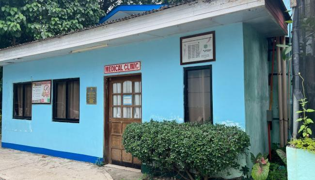
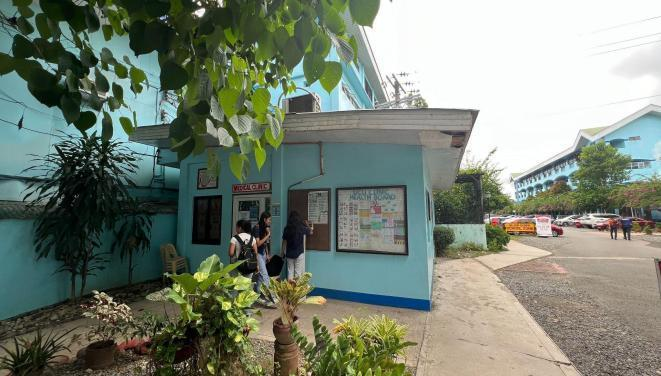
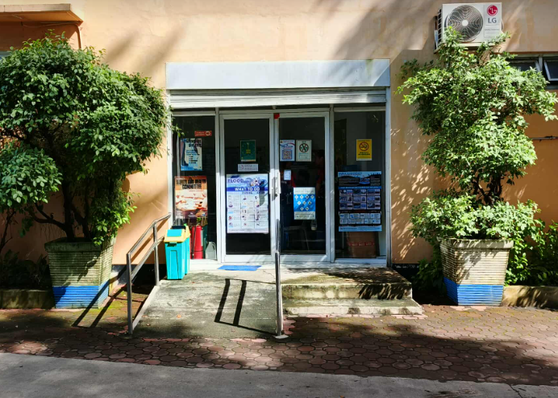

Urdaneta City University (UCU) prioritizes the health, safety, and well-being of its academic community through essential support facilities and emergency preparedness programs. Among these are the University Clinic and the Disaster Risk Reduction and Management Office (DRRMO), both of which play vital roles in ensuring a safe, healthy, and resilient campus environment.

Clinic Entrance
Clinic WardThe UCU Clinic serves as a primary healthcare facility for students, faculty, administrative personnel, and members of the university community. Guided by a patient-centered approach, the clinic provides accessible and compassionate medical care while promoting the overall health and well-being of the campus population.
The clinic is equipped with three patient beds to accommodate individuals requiring immediate medical attention or short-term observation. It also maintains a supply of essential medications to address common health concerns such as colds, coughs, dysmenorrhea, stomach pain, and other minor illnesses. This ensures that members of the community receive timely care, minimizing disruptions to academic and professional responsibilities.
In addition to providing treatment, the clinic actively promotes preventive healthcare through wellness programs, health education seminars, and awareness campaigns. These initiatives encourage healthy lifestyles and inform students and staff about available medical services and preventive practices. Through its dedicated healthcare personnel and integrated health programs, the UCU Clinic fosters a supportive environment where members of the community feel cared for, safe, and valued.

The Disaster Risk Reduction and Management Office (DRRMO) plays a critical role in safeguarding the university community from emergencies and disasters. The office develops and implements comprehensive disaster preparedness and emergency response strategies, ensuring that the university remains a resilient and well-prepared institution.
To build awareness and readiness, the DRRMO conducts regular training sessions, workshops, and drills that equip students, faculty, and staff with essential skills in first aid, fire safety, evacuation procedures, and emergency response. The office also develops and regularly updates emergency response plans tailored to various disaster scenarios, clearly outlining responsibilities and procedures during crises.
In collaboration with local government agencies and emergency responders, the DRRMO strengthens the university’s capacity to respond effectively to emergencies. The office also monitors and maintains essential safety equipment, assesses campus facilities for potential risks, and coordinates recovery measures following disaster events.
Through these proactive initiatives, the DRRMO reinforces UCU’s commitment to safety, preparedness, and resilience. By promoting awareness, training, and coordinated response systems, the office helps cultivate a campus culture where the well-being and security of students, faculty, and staff remain a top priority.